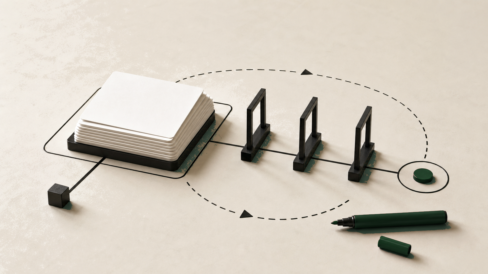

The product surface gets wider before the org chart does
A founder can now build a persuasive AI demo with a thin team. The prototype answers support questions, drafts copy, classifies tickets, routes tasks, or condenses a messy folder into something that looks ready for users. That last part is the trap.
The product surface widens the moment real customers touch it. What should they trust? Which answers need review? Where should the system stop instead of guessing? Which workflows belong in product, and which are experiments with buttons on them?
This is usually when the founder says, "We need a Head of Product." Maybe. My bias: define the product work before defining the permanent seat. A focused fractional scope can force the hard calls and expose what kind of full-time leader the company really needs.
AI lowers entry friction, but product judgment still decides quality
A 2026 arXiv analysis of more than 160,000 Product Hunt launches studied what happened after ChatGPT 3.5 hit the market. Generative AI correlated with a sharp rise in new launches, and solo founders drove much of that jump. At the highest ranks, though, team-based ventures still showed up more often.
Read that as a caution, not a trend deck. AI can lower the cost of shipping a first version. It cannot decide whether users understand the promise well enough to come back.
The missing work is plain and uncomfortable. Someone has to choose the product boundary, order the bets, name the evaluation loop, and say where human review is mandatory. If those choices stay implicit, the roadmap turns into a junk drawer.
The fractional question is ownership, not advice
Fractional product leadership gets flattened into "advice" too easily. A few calls and a deck are not enough. The useful version has temporary ownership over a product decision area that matters now, while the company is still too early for a permanent executive.
The labor market has already made this pattern legible. In May 2026, The Week described fractional workers as more embedded than freelancers, often taking part-time leadership roles across several companies. For product work, that embedded part matters. The person has to be close enough to change the next sprint, not merely comment on it.
For an AI-heavy startup, a useful fractional scope might own decisions like these:
- The first workflow that deserves a real product boundary.
- The places where model output needs review, explanation, editing, or a hard stop.
- The roadmap ideas that should wait for cleaner evidence.
- The weekly cadence that keeps product calls from returning to founder-only judgment.
That does not replace the founder. It gives the founder a sharper surface to operate.
What a three-month scope should settle
A three-month engagement should begin with the decisions blocking the team. Skip the generic discovery theater. The goal is to remove enough ambiguity that engineering, design, data, and go-to-market work stop tugging against each other.
Boundary decisions
AI products often fail quietly because the team keeps adding jobs the model can plausibly attempt. Capability is not scope. A product boundary says what the product is responsible for now, what sits outside it, and what the user sees when the system reaches its limit.
Sequencing decisions
Early AI roadmaps fill up with model-quality fixes, workflow changes, data plumbing, and interface polish. It can all sound urgent. Sequencing asks the less comfortable question: what has to be true before this next bet deserves engineering time? Sometimes the answer is not another feature. It is a narrower workflow, a review queue, or a better way to collect examples.
Validation decisions
Validation cannot stop at "the model worked in a demo." The team needs to know whether users can catch weak output, whether review happens inside the real task, and whether the product creates repeat use without acting more certain than it is.
A generic example: the support assistant that keeps expanding
Imagine a founder building an AI support assistant for a technical product. The demo answers policy questions, drafts replies, summarizes account history, and suggests follow-up steps. Sales wants it in every customer-facing workflow. Engineering wants better retrieval. Support wants guardrails before agents trust the output.
Without product ownership, the roadmap becomes a catalog of plausible expansions. Each item looks small by itself. Together, they create a product no one can evaluate with a straight face.
A fractional product lead would narrow the surface. The first boundary might be agent-facing draft help for one support category, with human review before any response leaves the queue. The validation loop might track example quality, edit reasons, refusal cases, and whether agents can explain why they accepted or changed a suggestion. Self-serve customer automation can wait until the evidence is stronger.
That is a product decision, not a planning preference. It protects focus without pretending the product is finished.
Bring in help when decisions start compounding
If the problem is simple execution capacity, fractional product leadership may be too much. Hire a contractor or assign a PM. If the founder and engineering lead can still make the product calls, let them keep moving.
Bring in fractional product leadership when decisions stack up faster than the team can close them. The signs are usually concrete: a working demo with fuzzy user boundaries, a roadmap where every AI-adjacent idea claims urgency, or quality debates with no shared test.
The worst time to define the Head of Product role is during the hire. Define it through the work first. A focused fractional engagement can leave the founder with a smaller scope and a clearer brief for the eventual full-time leader. The habits matter too, because they are what the hire inherits.
Define the role through the work
AI gives founders more reach. It also gives them more product surface to govern. Before adding a permanent product executive, make that surface smaller and clearer.
The best short engagement does not end with a thick strategy deck. It ends with fewer open questions and a team that knows what it has to validate next.
Scope the AI product decision before the hire
If your demo works but the roadmap gets wider every week, Edgecaser can help clarify the product boundary and the validation loop a full-time product leader would inherit.
Talk through the product scope